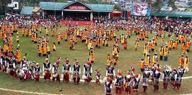
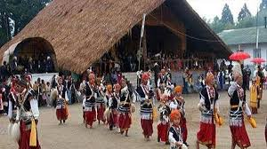
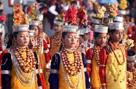
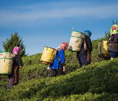
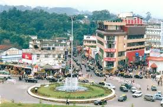
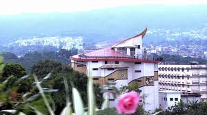
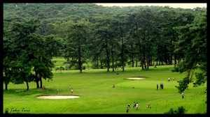
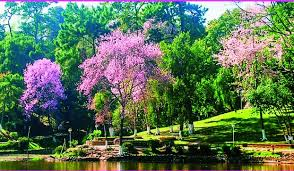

Shillong
"Shillong is hill station in northeast India and capital of
the state of Meghalaya which means "The Abode of Clouds".It is the headquarters
of the East Khasi Hills district. Shillong is the 330th most populous
city in India with a population of 143,229 according to the 2011 census.It is said that
the rolling hills around the town reminded the British of Scotland. Hence, they would also
refer to it as the "Scotland of the East"."
"It's known for the manicured gardens
at Lady Hydari Park.Nearby,Wards Lake is surrounded by walking trails.North, the Don Bosco
Centre for indigenious Cultures features displays on the region's native people.Waterfalls
include the Elephant Falls to the southwest. East of here, forested Shillong Peak offers
city views."
Culture of Shillong
Shillong is often called as 'India's Rock Capital' due to the great passion for music among the inhabitants of the city. The Khasis sing songs praising nature
and use different types of musical instruments like ‘duitaras’, drums and other traditional instruments. Weaving of cane and cloth is an ancient craft and is
practiced by the natives along with the extraction of iron ore to make knives, utensils and warfare weapons. Important festivals like Christmas, Nongkrem Dance
and Ka Shad Suk Mynsiem are celebrated in Shillong with great pomp and show. The staple food of the people of Shillong is rice which is taken with fish and meat.
The Khasis also prepare rice-beer which is used in ceremonies and religious occasions.
Shad Suk Mynsiem
Shad Nongkrem
Tynrai khasi
Khasi people
Police Bazaar
Don Bosco
Golf Link
Cherry blossom
.jpg)